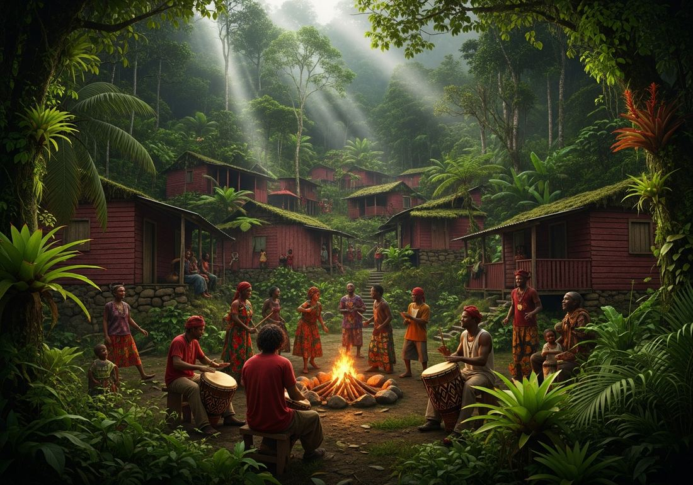

4.6 Internal and External Challenges to State Power from 1450 to 1750
- LO-A: State expansion creates resistance — The core argument for this topic: as states expanded and centralized power in the period 1450–1750, they encountered resistance from "an array of social, political, and economic groups on a local level." This resistance took many forms — indigenous uprisings, elite rebellions, peasant revolts, and enslaved resistance — but all shared a common cause: expansion of state power that disrupted existing social arrangements. Local resistance examples (AP exam-named) — Pueblo Revolt (1680): indigenous peoples of New Mexico drove Spanish colonizers out of the region for 12 years. Fronde (1648–1653): French nobles and Paris parlements rebelled against Cardinal Mazarin's expansion of royal power during Louis XIV's minority. Cossack revolts (Russia): free military communities on the Russian frontier resisted incorporation into the Russian state. Maratha conflict with Mughals: Hindu Maratha Confederacy challenged Mughal expansion in the Deccan plateau. Ana Nzinga (Ndongo and Matamba): West African queen who resisted Portuguese encroachment for decades. Metacom's War (King Philip's War, 1675–1676): New England indigenous coalition resisted English colonial expansion. Enslaved resistance — Enslaved Africans in the Americas did not passively accept their condition. Two major forms of organized resistance: Maroon societies — communities of escaped enslaved people who established autonomous settlements in remote areas of the Caribbean, Brazil, and South America, sometimes maintaining independence for generations. Enslaved resistance in North America — slower to organize than Caribbean/Brazilian Maroon communities but included work slowdowns, sabotage, flight, and occasional armed uprisings.
Try each question before revealing the answer.
1. The Pueblo Revolt of 1680 drove the Spanish out of New Mexico for 12 years. What factors allowed this relatively small indigenous population to succeed against a Spanish colonial power that had previously been militarily superior?
2. The Fronde (1648–1653) was a series of rebellions in France involving both noble elites and urban commoners against royal centralization. Why would these two very different groups — nobles and commoners — both resist the same royal policies?
3. Maroon societies — communities of escaped enslaved people — managed to sustain themselves for decades and sometimes centuries in remote areas of the Caribbean, Brazil, and Suriname. What does their persistence reveal about the limits of European colonial power?
4. Ana Nzinga of Ndongo and Matamba (present-day Angola) resisted Portuguese colonization for decades through a combination of military force, diplomacy, and strategic alliance-building. What does her resistance strategy reveal about effective anti-colonial tactics?
5. Metacom's War (King Philip's War, 1675–1676) was the most destructive war per capita in American history. Why did indigenous New England peoples, who had largely maintained peaceful relations with English settlers for over fifty years, launch such a widespread and coordinated uprising in 1675?
- Explain the effects of the development of state power from 1450 to 1750, including how state expansion and centralization led to resistance from social, political, and economic groups
Tap a term for its definition.
-
Definition: A coordinated uprising of Pueblo peoples in New Mexico led by Popé, which drove Spanish colonizers out of the region for 12 years (until the Spanish reconquest of 1692). Significance: the most successful indigenous rebellion against Spanish colonialism in North America; demonstrated that indigenous resistance could temporarily reverse colonial occupation; the Spanish returned with more flexible governance policies.
-
Definition: A series of civil wars in France involving noble rebellions (Fronde des princes) and parliamentary resistance (Fronde parlementaire) against Cardinal Mazarin's expansion of royal power during Louis XIV's minority. Significance: ultimately failed — Louis XIV's absolute monarchy emerged strengthened — but it demonstrates that state centralization in early modern Europe faced elite resistance from groups threatened by the loss of traditional privileges.
-
Definition: Free military communities on the frontier of the Russian Empire (and in Ukraine/Poland), composed of escaped serfs, outlaws, and adventurers who maintained autonomous self-governance and provided military service in exchange for their freedom. Significance: Cossack revolts (especially Stenka Razin's revolt, 1670–1671, and later Pugachev's revolt, 1773–1775) represented the resistance of autonomous frontier communities to incorporation into the expanding Russian state's serf-labor system.
-
Definition: A Hindu warrior people from the Deccan plateau of western India who formed the Maratha Confederacy in the late 17th century, becoming the primary challenger to Mughal imperial authority. Significance: led by Shivaji Bhosale (1627–1680), the Marathas resisted and successfully contested Mughal expansion into the Deccan, eventually emerging as the dominant power in India in the 18th century after Mughal decline.
-
Definition: A West Central African queen (c. 1583–1663) who ruled Ndongo and later Matamba (present-day Angola) and conducted a decades-long diplomatic and military resistance against Portuguese colonization and the Atlantic slave trade. Significance: used a combination of military force, diplomatic negotiation, conversion to Christianity (strategically), and alliances with Dutch traders against Portuguese to defend her kingdom's sovereignty.
-
Definition: A major armed conflict between English colonists and an indigenous coalition led by Metacom (Wampanoag, called "King Philip" by the English) against English colonial expansion in New England. Significance: the most destructive conflict per capita in American history; ultimately ended in English victory and the near-destruction of indigenous political power in New England, but demonstrated the capacity for large-scale coordinated indigenous resistance to colonial expansion.
-
Definition: Communities formed by escaped enslaved Africans in remote areas of the Caribbean, Brazil, and South America, which maintained independence from colonial authorities, sometimes for generations. Significance: examples include the Quilombo dos Palmares (Brazil, lasted ~90 years), the Windward and Leeward Maroons of Jamaica (forced British into formal treaties recognizing their autonomy). Represent organized, sustained enslaved resistance rather than individual acts.
-
Definition: The largest and most enduring Maroon community in Brazilian history, established by escaped enslaved Africans in the mountains of Alagoas (northeastern Brazil), lasting approximately 1605–1694. At its peak, Palmares had tens of thousands of inhabitants and survived repeated Portuguese/Dutch military assaults. Significance: The most powerful example of enslaved resistance in the Americas; led by a series of leaders including Zumbi dos Palmares, who became a Brazilian national symbol of freedom; Palmares was finally defeated in 1694 after a large military campaign.
⚔️ Why State Expansion Creates Resistance
The period 1450–1750 was an era of enormous state expansion: Spanish and Portuguese empires stretched across oceans; the Mughal Empire unified most of South Asia; the Russian Empire pushed east across Siberia; the Qing Dynasty conquered China and Central Asia. All of this expansion required something from the people it incorporated: tribute, labor, land, religious conversion, or political submission.
When states demanded these things, people resisted. The AP exam's key insight for Topic 4.6 is that "state expansion and centralization led to resistance from an array of social, political, and economic groups on a local level." This resistance was not random — it arose when state demands threatened the existing social arrangements that communities depended on for survival and identity.
The AP exam's provides a rich set of illustrative examples spanning four continents. Let's examine each one.
🏜️ Local Resistance Across the World
🌿 Enslaved Resistance: Maroon Societies
Among the most significant forms of resistance in the period 1450–1750 was the organized resistance of enslaved Africans in the Americas. The College Board specifically identifies two forms: Maroon societies in the Caribbean and Brazil, and resistance in North America.
Maroon societies were communities formed by escaped enslaved people who fled into remote mountains, forests, and swamps beyond the reach of colonial authority. The word "Maroon" derives from the Spanish cimarrón (wild, runaway). These communities were not random collections of fugitives — they were organized societies with governance structures, agricultural systems, military forces, and, crucially, a fierce determination to defend their freedom.

Image credit not specified.
A Maroon village in the mountains of Jamaica — remote, defensible, self-sufficient. Maroon communities used terrain knowledge and guerrilla tactics to resist colonial military forces for generations. AI-generated illustration (Google Gemini, 2025), commercially licensed.
The most famous Maroon communities:
- Quilombo dos Palmares (Brazil, c. 1605–1694) — The largest Maroon community in history. Located in the mountains of Alagoas, at its peak Palmares housed tens of thousands of people. It survived repeated Portuguese and Dutch military expeditions for nearly ninety years before being finally destroyed in 1694. Its last great leader, Zumbi dos Palmares, became a Brazilian national hero and symbol of Black resistance; November 20 is Zumbi Day in Brazil.
- Windward and Leeward Maroons of Jamaica — Two distinct communities in the mountains of Jamaica who resisted British authority so effectively that in 1739–1740 the British signed formal treaties with them, recognizing their autonomy in exchange for a promise not to receive new escapees. The British signed a treaty with people they had been trying to exterminate — a remarkable acknowledgment of the limits of colonial military power.
- Suriname Maroons — The Dutch also signed treaties with Maroon communities in Suriname; the descendants of these communities continue to maintain distinct cultural identities today, with their cultural traditions recognized as UNESCO Intangible Cultural Heritage.
⛓️ Enslaved Resistance in North America
Enslaved resistance in North America was more difficult to organize into sustained Maroon communities than in the Caribbean and Brazil, largely because the North American geography offered fewer natural defenses (no accessible mountain ranges in the Southeast, where most enslaved people lived), and because the enslaved population was more dispersed across individual farms rather than concentrated on large plantations.
Nevertheless, North American enslaved resistance was constant, though it took different forms:
- Work slowdowns and sabotage — The most pervasive and difficult-to-suppress form of resistance; enslaved workers could work slowly, break tools, feign illness, and damage crops without the risk of organized armed revolt
- Flight (petit marronage) — Individual or small-group escapes, temporary or permanent; the Underground Railroad of the 19th century had earlier precedents
- Cultural resistance — Maintaining African languages, religious practices (see Vodou, Topic 4.5), music, and family connections despite systematic efforts to destroy them
- Armed uprisings — Less common and more dangerous, but occurred: Stono Rebellion (South Carolina, 1739) was the largest armed enslaved rebellion in North American history before the Revolution
Nothing added yet. To attach a Google NotebookLM audio overview, video overview, or infographic to this topic: open this file — build/data/content/ap-world-history/4-6.json — and add an entry to notebookLmResources with a title and a shareable link (or paste an embed <iframe> directly into this block in the generated HTML file if you're editing the page by hand instead).
- A) Resistance by a local population against colonial religious suppression and labor demands, temporarily reversing Spanish expansion
- B) The failure of Spanish military technology compared to indigenous weapons in North American terrain
- C) The success of Protestant missionary activity in undermining Spanish Catholic colonialism
- D) The inability of the Spanish colonial system to incorporate indigenous peoples through voluntary assimilation
- A) The failure of Portuguese colonial governance to establish effective control over Brazilian territory
- B) The Portuguese government's tolerance of indigenous autonomous communities as a colonial policy
- C) The organized, sustained resistance of enslaved Africans who established autonomous communities beyond colonial control
- D) The limits of African agricultural knowledge when applied in a Brazilian ecological context
- A) The effectiveness of purely military resistance against Portuguese colonial power in West Africa
- B) The use of combined diplomatic, military, and alliance-building strategies to resist colonial encroachment
- C) The willingness of European colonial powers to respect African sovereignty when formally requested
- D) How religious conversion to Christianity was the most effective strategy for African rulers resisting Portuguese colonialism
- A) British humanitarian concern for the welfare of formerly enslaved people in Jamaica
- B) The Maroons' agreement to return to plantation labor in exchange for legal recognition
- C) Spanish diplomatic pressure on Britain to recognize the rights of autonomous communities in the Caribbean
- D) The recognition that sustained military resistance by the Maroons had made continued armed suppression more costly than negotiated recognition of their autonomy
- A) How religious differences between Hindu and Muslim communities inevitably produced armed conflict in South Asia
- B) The failure of Mughal administrative policies to incorporate Hindu populations into the Mughal state
- C) How asymmetric military tactics could allow a smaller force to resist a numerically and materially superior state
- D) How European military technology influenced indigenous resistance movements in Asia during this period
Answer all three parts.
Part A
Explain ONE cause of local resistance to state expansion in the period 1450–1750, using a specific example.
Part B
Explain how enslaved Africans in the Americas challenged colonial authority through organized resistance in the period 1450–1750.
Part C
Explain ONE similarity between two different examples of resistance to state expansion in the period 1450–1750.
Consider both successful and unsuccessful resistance; think about what "effective" means — temporary reversal vs. long-term limits vs. negotiated recognition of autonomy.
📝 My Notes (edit this yourself — no AI needed)
This box is yours. Open this page's HTML file directly (in GitHub's editor or any text editor), find the <!-- MY-NOTES-START --> comment below, and type between the markers — corrections, extra context for this year's students, a link, anything. Changes show up as soon as you save and re-publish the file — nothing else on the page will change.
(Add your own notes, corrections, or extra context here.)